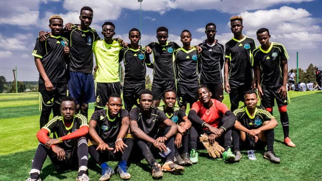

KIDS
This is a wider card with supporting text below as a natural lead-in to additional content. This content is a little bit longer.

TEENS
This card has supporting text below as a natural lead-in to additional content.

ADULTS
This is a wider card with supporting text below as a natural lead-in to additional content. This card has even longer content than the first to show that equal height action.